Educational Background
Master Degree (2020 - 2023)
M.Sc., Computer Engineering, Computer Networks
Department of Computer Engineering, University of Mazandaran, Mazandaran, Iran
Thesis: Combining Virtual Machines and Containers in a Cluster
Supervised by: Dr. Ehsan Ataie
Total GPA: 3.88/4 (17.92/20 in Iranian Scale)
Bachelor Degree (2015-2020)
B.Sc., Computer Engineering, Information Technology
Department of Computer Engineering, Azad University, Mazandaran, Iran
Final Project: Hyper-V
Advised by: Dr. Esmaeili
Total GPA: --/4 (14.9/20 in Iranian Scale)
GPA of the Last Two Years: --/4 (--/20 in Iranian Scale)
Academic Experience
Teaching Assistant
Cloud Computing (for Master Students), Supervised by Dr. Ehsan Ataie, Fall 2022
Training (Kubernetes, Docker, Prometheus and Grafana), and Project Management
Cloud Computing (for Bachelor Students), Supervised by Dr. Ehsan Ataie, Fall 2022
Training (Kubernetes, Docker, Prometheus and Grafana) and Project Management
Performance Evaluation (for Master Students), Supervised by Dr. Ehsan Ataie, Fall 2021
Training, Exercise Definition, and Project Management
Research Assistant
Performance Analysis of Serverless Platforms, Supervised by Dr. Ehsan Ataie,
( Nov 2022 - Aug 2023)
As a team leader, my work revolves around exploring serverless platforms such as Open-FaaS, Fission, Nuclio, Knative, and OpenWhisk. The primary objective of our project is to assess the performance of these platforms in different Kubernetes deployments under varying conditions. We aim to conduct thorough evaluations and collect valuable data to derive meaningful insights. Ultimately, the results of our research will be compiled and proposed in articles to contribute to the existing body of knowledge in the field of serverless computing and Kubernetes deployment.
Research Interests
1. Cloud Computing
2. Parallel Computing / High Performance Computing
3. Virtualization
4. Serverless Computing
5. Machine Learning

Software Skills
1. Kubernetes (show certificate)
2. Docker (show certificate)
3. LPIC1 and LPIC2
4. LPIC 304 (show certificate)
5. Python
6. Monitoring Tools (Prometheus, Grafana and Zabbix)
7. Microsoft Certificate (70-698, 70-410 and 70-411)
8. Benchmarking Tools
9. HPC (High Performance Computing)
10. Virtualization (Xen, ESXi, KVM and ...)
Publications
1.
2.
3.
Maziar
Aqasi Zade
Gratuated Reseach Assistant,
Department of Computer Engineering,
University of Mazandaran, Mazandaran, Iran
E-mail: h.aqasizade1995@gmail.com
Phone: +98 904 604 0759

 Download CV
Download CV